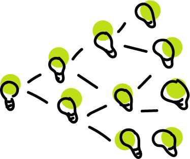

Nessa foto icônica vemos Steve Jobs apresentando pela primeira vez o iPhone ao mundo, façanha que só seria possível graças a programação.
Quando chegamos a vida adulta e temos como tarefa sermos independentes e nos preparar para um mundo cheio de adversidade onde nada está garantido, deixamos a personalidade birrenta e adentramos em uma personalidade mais madura como uma forma de sobrevivência talvez.
Estamos sempre em contato com o novo e aprendendo coisas novas, mesmo que de forma inconsciente sem percebermos em um eterno processo de aprendizado.
Abaixo listo 3 motivos aos quais vale a pena considerar e logo de cara esclarecendo que o intuito do artigo não é provar nada, mas sim, abrir um debate, será que ao fim do artigo o leitor terá uma dimensão da importância da programação?
Programar te ensina a pensar logo você terá os melhores insights.
Programar é trabalhar o seu espírito de comunidade, é buscar por soluções onde pessoas já solucionaram usando muitas vezes a criatividade ou conhecimentos técnicos, você vai querer retribuir de alguma forma também.
Programar é expandir os seus conhecimentos é ter vantagens sobre qualquer desafio, quem programa desenvolve uma facilidade incrível para aprender coisas novas e um grande interesse em buscar novos aprendizados também.
Acredito que todos somos Da Vinci, Jobs, Gates, só ainda não tivemos o “estalo” de ideias que eles tiveram.
O mais importante nesse processo é chegar à conclusão que aprender a programar é "conseguir aprender qualquer coisa", é chegar ao mais próximo possível do topo do conhecimento investindo pouco.